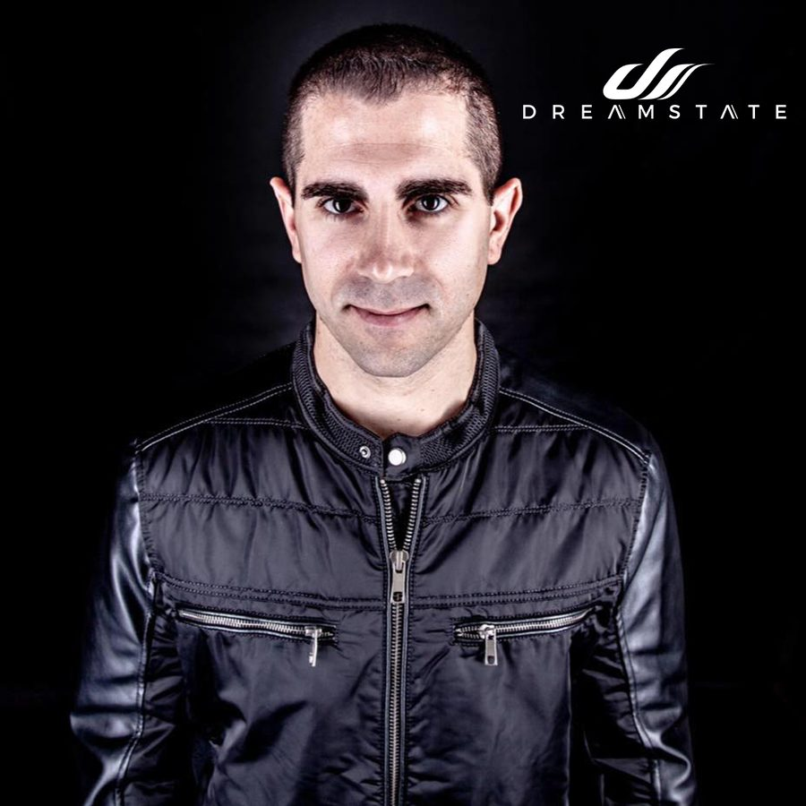

Giuseppe Ottaviani Selects His Top 10 Trance Weapons for Dreamstate SoCal 2018


Italy’s Giuseppe Ottaviani is one of the scene’s most enduring and prolific figureheads, with a special touch in the studio that has clearly been anointed by the trance gods—from his earlier work at the turn of the millennium as part of the iconic NU NRG group, to becoming somewhat of an official off-sider to Paul van Dyk and his Vandit stable in the decade that followed, to launching his own GO Music label (and associated GO ON AIR radio show) as an official extension of the Giuseppe Ottaviani musical identity.
Giuseppe will be representing at Dreamstate SoCal this weekend as an esteemed member of the trance fraternity. Naturally, we wanted him to say a few words in the lead-up to his set this weekend, so we’re excited to present Giuseppe’s Top 10 trance chart below.
Aly & Fila with Sue McLaren “Surrender” (Giuseppe Ottaviani Remix)
I really liked the original mix, and I had no hesitation when they asked me to remix it. Love at first sight.
Giuseppe Ottaviani “Slow Emotion 2” (Sean Tyas Remix)
Sean did such a great work on this one, and he also made an exclusive VIP edit for his VII compilation album. Go and check it out.
Manuel Le Saux & Astuni with Linnea Schossow “Everywhere You Go”
One of the best releases on my label, GO Music; proud of these guys.
Nikolauss “Lifdagar”
He’s an amazing talent from Romania. I had the pleasure of meeting him last year, and since then, he’s on my radar.
Paul van Dyk ft. Plumb “Music Rescues Me”
Although I fell in love with the previous version sung by Johnny McDaid some time ago, I have to say, Plumb did the song justice. Love it.
Ben Gold & Audrey Gallagher “There Will Be Angels” (STANDERWICK Remix)
Big fan of the original, even bigger fan of the Standerwick remix.
Bryan Kearney & Sneijder “Killer Instinct”
Dark and dirty, just the way I like it.
Heaven’s Cry “Revival”
It’s all about the super driving bassline and snare percussions. Oh, did I mention the big melody, too?
Kolonie “Olympus”
While people might think I’m an uplifting fan only, I’m actually not. Love the slower stuff even more, when it’s done properly. This is what I listen to in my car.
Sunny Lax & Aneym “Counter Clockwise” (Max Freegrant & Slow Fish Remix)
Copy and paste the previous comment. 🙂
Giuseppe Ottaviani is playing at Dreamstate SoCal 2018, which takes place Thanksgiving weekend—Friday, November 23, and Saturday, November 24—at NOS Events Center in San Bernardino, CA. Tickets are on sale now. For more information, visit the official website.
Follow Giuseppe Ottaviani on Facebook | Twitter | SoundCloud
Follow Dreamstate on Facebook | Twitter | Instagram